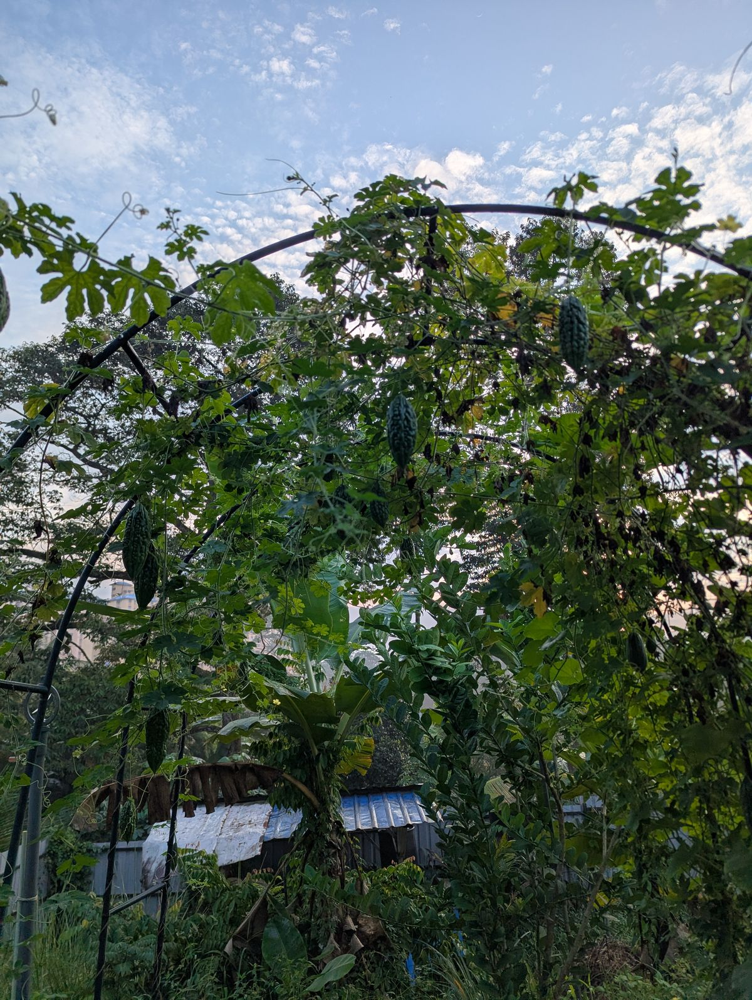
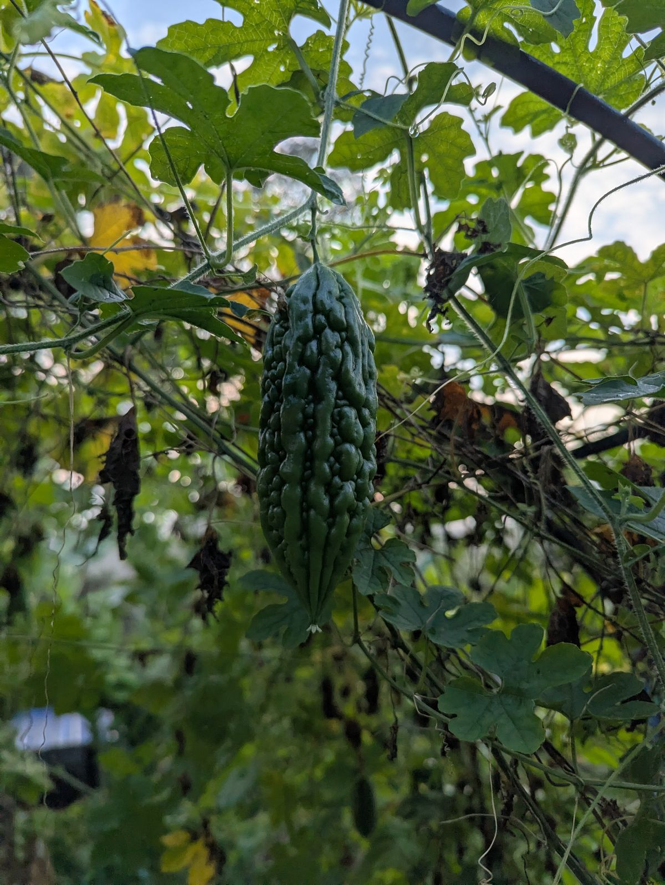

An urban farm in the heart of Johor Bahru — committed to sustainable practices and saying no to pesticides....
位于柔佛市中心的一个城市农场—致力于可持续务农，坚决不使用农药....
Explore GuidesFresh from the farm — picked at peak ripeness, no pesticides, full flavour.


Rich in vitamins C & A, iron, potassium, and antioxidants. Used in traditional medicine to manage blood sugar levels. A staple in Southeast Asian stir-fries, soups, and juices.
📺 Try this recipe: Bitter Gourd Recipes on YouTube →
Start your veggie patch with our step-by-step guide—soil prep, planting, watering, and harvesting.
Every crop planted at Greens N Berries, organised by month from seed to harvest.
Turn kitchen scraps into black gold. Learn hot vs. cold composting and what goes in the bin.
Everything from coop setup to daily care. Fresh eggs every morning!
Basil, mint, rosemary, and more—grow a thriving herb garden in pots or beds.
Set up rain barrels and irrigation systems to conserve water and keep plants happy.
Attract bees and butterflies with native flowers. Boost your garden's yield naturally.
Have questions or want to share your homestead story? We'd love to hear from you.
📧 Email: greensnberriesjoyacres@gmail.com
💬 WhatsApp: +60 11-1911 7084